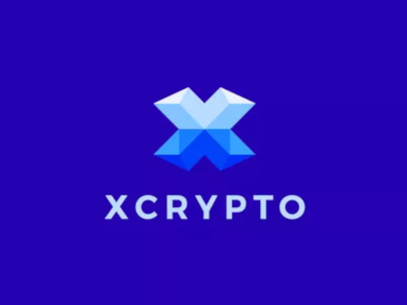

welcome to the offical Xerox Cryptograpy webpage

Xerox Crypto (XRX) is a currency fonded by Wullie , Andrew Deeds, Lenrik and Rollingvolcanoe.
How it works
Xrx uses a custom algorithm developed by William Morrison that gives each block (list of transactins) a random hash. The transaction is sent out to the network of miners to prosses the 1 and 0 to convert them back into hexidecimal and then into prime number form and moving the block to a node(a pc that runs software to verify if the hash was real) and the added to the block chain. everything in this prosess will be encryped using a new encryption algorithm called XRX32
is xerox actualy developing a game?
we are definatly developing our own game we now have an aritst to desinge icons and sprites. Also two of our developers have also made games in the passed. we may make it avalible on the appStore but it deffenatly will be avalible on the play store, Linux and windows.
What type of game is Xerox developing?
well we are planing to make a clicker style game but we don't quite know what to make the clicker about yet. If you have any ideas then poste them on our public discord we are very active on it. there will be a hyperlink at the bottom of this site for you to join
where to get the software
all software will be avalible from our github and our website when its ready. The game will also be on our website under a different link.
copyright
copyright of Xerox Cryptography ©